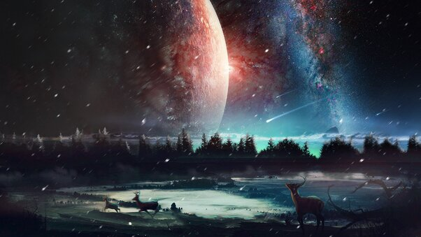

COMO SURGIU
A maioria das galáxias surgiu um pouco depois da formação do universo. Os cientistas acreditam que elas tenham, em média, entre 10 e 13,6 bilhões de anos! A galáxia mais nova de que se tem notícia nasceu há cerca de 500 milhões de anos. As estrelas são um dos corpos celestes que compõem as galáxias.

QUANTOS SOL TEM NA NOSSA GALAXIA?
A Via Láctea é uma galáxia espiral, da qual o Sistema Solar faz parte. Vista da Terra, aparece como uma faixa brilhante e difusa que circunda toda a esfera celeste, recortada por nuvens moleculares que lhe conferem um intrincado aspecto irregular e recortado. Sua visibilidade é severamente comprometida pela poluição luminosa. Com poucas exceções, todos os objetos visíveis a olho nu pertencem a esta galáxia. Sua idade estimada é de mais de treze bilhões de anos, período no qual passou por várias fases evolutivas até atingir sua forma atual.[nota 1] Formada por centenas de bilhões de estrelas, a galáxia possui estruturas diferenciadas entre si. No bojo central, que possui forma alongada, há uma grande concentração de estrelas, sendo que o exato centro da galáxia abriga o buraco negro supermassivo Sagitário A*. Ao seu redor estende-se o disco galáctico, formado por estrelas dos mais diversos tipos, nebulosas e poeira interestelar, dentre outros. É nesta proeminente parte da Via Láctea que se manifestam os braços espirais. Ao seu redor encontram-se centenas de aglomerados globulares. Entretanto, a dinâmica de rotação da galáxia revela que sua massa é muito maior do que a de toda a matéria observável, sendo este componente adicional denominado matéria escura, cuja natureza se desconhece.

O QUE HÁ DE MAIS INTERSSANTE NA NOSSA GALAXIA
Não há muita certeza de quantas estrelas exatamente existem na Via Láctea, mas estima-se que sejam aproximadamente 200 bilhões delas, podendo chegar a 400 bilhões. As mais comuns são, de longe, as anãs amarelas, enquanto as gigantes vermelhas são bem mais raras. Embora nosso céu noturno seja rico em constelações que podemos identificar e observar, vemos pouquíssimas estrelas da Via Láctea a olho nu — apenas 0,000003% delas é visível. Claro, podemos ver algumas galáxias, como Andrômeda, em um céu livre de poluição luminosa, e ela também está cheia de estrelas. Entretanto, não podemos ver nenhuma delas individualmente, mas sim a soma de suas luminosidades.
